Gallery of GeoClaw applications¶
See also the Gallery of Jupyter notebooks.
Chile 2010 tsunami¶
Directory: `$CLAW/geoclaw/examples/tsunami/chile2010`
Simple model of the 2010 tsunami arising offshore Maule, Chile.
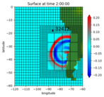 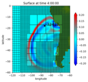 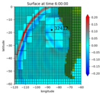 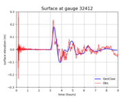Adjoint AMR Flagging¶
Directory: `$CLAW/geoclaw/examples/tsunami/chile2010_adjoint`
Simple model of the 2010 tsunami using adjoint flagging.
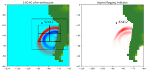 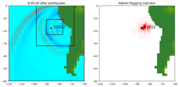Adjoint problem¶
Directory: `$CLAW/geoclaw/examples/tsunami/chile2010_adjoint/adjoint`
Adjoint solution from DART 32412, used for adjoint flagging.


Radially-symmetric tsuanami in parabolic bowl¶
Directory: `$CLAW/geoclaw/examples/tsunami/bowl-radial`
Sample code where solution should be radially symmetric.
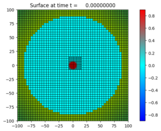 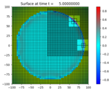 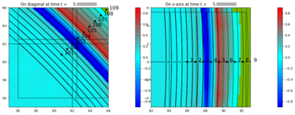Sloshing water in parabolic bowl¶
Directory: `$CLAW/geoclaw/examples/tsunami/bowl-slosh`
Sample code with analytic solution.
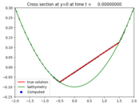 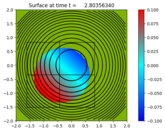Storm Surge¶
Directory: `$CLAW/geoclaw/examples/storm-surge/ike`
Storm surge simulation of Hurricane Ike (coarse grid)
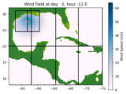Directory: `$CLAW/geoclaw/examples/storm-surge/isaac`
Storm surge simulation of Hurricane Isaac (coarse grid)

Multi-layer shallow water¶
Directory: `$CLAW/geoclaw/examples/multi-layer/plane_wave`
Plane wave hitting shelf with multi-layer equations
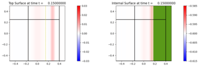Directory: `$CLAW/geoclaw/examples/multi-layer/bowl-radial`
Multi-layer waves in a parabolic bowl
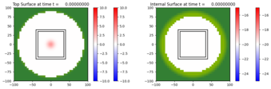eta_init and force_dry¶
Directory: `$CLAW/geoclaw/examples/tsunami/eta_init_force_dry`
Tsunami with subsidence and dry regions below sea level.
 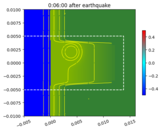
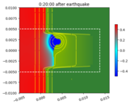
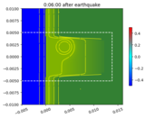
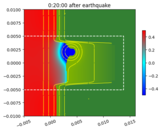
Directory: `$CLAW/apps/tsunami/shelf1d`
Tsunami interacting with 1d continental shelf
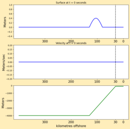 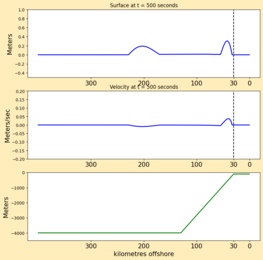{kind=link}
{kind=link}
{kind=link}
Directory: `$CLAW/apps/tsunami-examples/tohoku2011_hawaii_currents`
Tohoku tsunami and comparison with gauge data in Hawaii
fgmax examples¶
Directory: `$CLAW/geoclaw/examples/tsunami/radial-ocean-island-fgmax`
Radial ocean and island test problem from AWR 2011 paper.
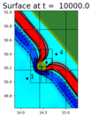 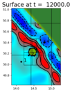 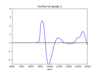Directory: `$CLAW/geoclaw/examples/tsunami/chile2010_fgmax-fgout`
Chile 2010 wave heights and arrival times
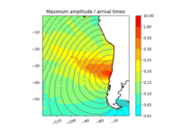{kind=link}
fgout examples¶
Directory: `$CLAW/geoclaw/examples/tsunami/chile2010_fgmax-fgout`
Chile 2010 output on fgout grid and animation
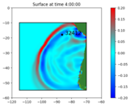Lagrangian gauges¶
Directory: `$CLAW/geoclaw/examples/tsunami/island-particles`
Lagrangian gauges allow particle tracking
Boussinesq equations¶
Directory: `$CLAW/geoclaw/examples/bouss/radial_flat`
Dispersive SGN Boussinesq-type equations with Gaussian initial data on flat topograpy, radially symmetric
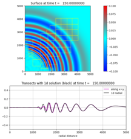1D GeoClaw - shallow water equations¶
Directory: `$CLAW/geoclaw/examples/1d_classic/ocean_shelf_beach`
Wave moving from ocean onto continental shelf and up a beach
Directory: `$CLAW/geoclaw/examples/1d_classic/okada_dtopo`
Tsunami generated by earthquake using the Okada model in 1D
Directory: `$CLAW/geoclaw/examples/1d_classic/shoaling_qinit_box`
Wave shoaling example with unit box initial data
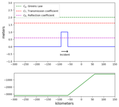Directory: `$CLAW/geoclaw/examples/1d_classic/shoaling_qinit_step`
Wave shoaling example with step function initial data
1D GeoClaw - Boussinesq equations¶
Directory: `$CLAW/geoclaw/examples/1d_classic/bouss_wavetank_matsuyama`
Wave tank simulation with comparison to experiment in paper of Matsuyama, et al. 2007
Directory: `$CLAW/geoclaw/examples/1d_classic/bouss_wavetank_usace`
Wave tank simulation with comparison to experiment done by US Army Corps of Engineers

Version 5.10.x
Table of Contents
- Gallery of GeoClaw applications
- Chile 2010 tsunami
- Adjoint AMR Flagging
- Adjoint problem
- Radially-symmetric tsuanami in parabolic bowl
- Sloshing water in parabolic bowl
- Storm Surge
- Multi-layer shallow water
- eta_init and force_dry
- fgmax examples
- fgout examples
- Lagrangian gauges
- Boussinesq equations
- 1D GeoClaw - shallow water equations
- 1D GeoClaw - Boussinesq equations
Related Topics
- Documentation overview
- Previous: Gallery of all PyClaw applications
- Next: Gallery of fvmbook applications